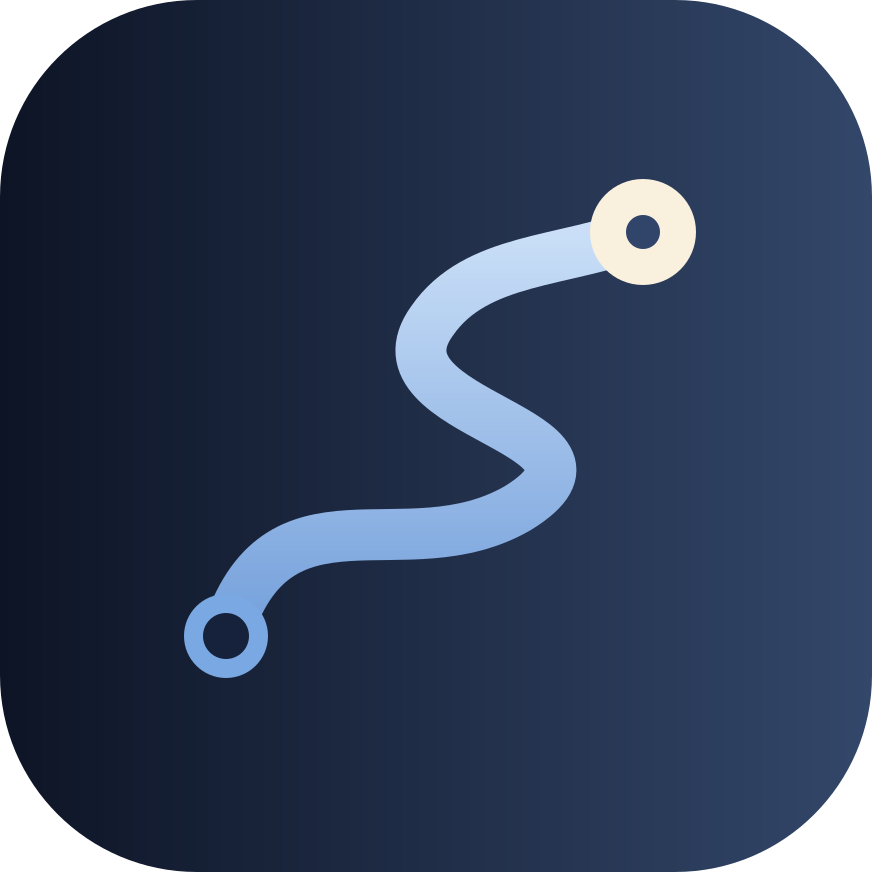

Rota
--:--:--
Sayaç ekle
Düzenle
Takvim
YKS
Ana sayfaya dön
Görev 1
Görev 2
Görev 3
Görev 4
Görev 5
Görev 6
Görev 7
Görev 8
Görev 9
Görev 10
Görev 11
Görev 12
Görev 13
Görev 14
Görev 15
Görev 16
Görev 17
Görev 18
Görev 19
Görev 20
Görev 21
Görev 31
Görev 32
Görev 33
Görev 34
Görev 35
Görev 36
Görev 37
Görev 38
Görev 39
Görev 40
Görev 41
Görev 42
Görev 43
Görev 44
Görev 45
Görev 46
Görev 47
Görev 48
Görev 49
Görev 50
Görev 51
Görev 52
Görev 53
ÇALIŞMA ZAMANI
Sayaçların
×
Yeni sayaç ekle
Sayaç etiketi
Tür
Geri sayım
Kronometre
Saat
Dakika
Saniye
25 dk
45 dk
60 dk
100 dk
Süre bitince ses çal
Ekle
Ekle ve başlat